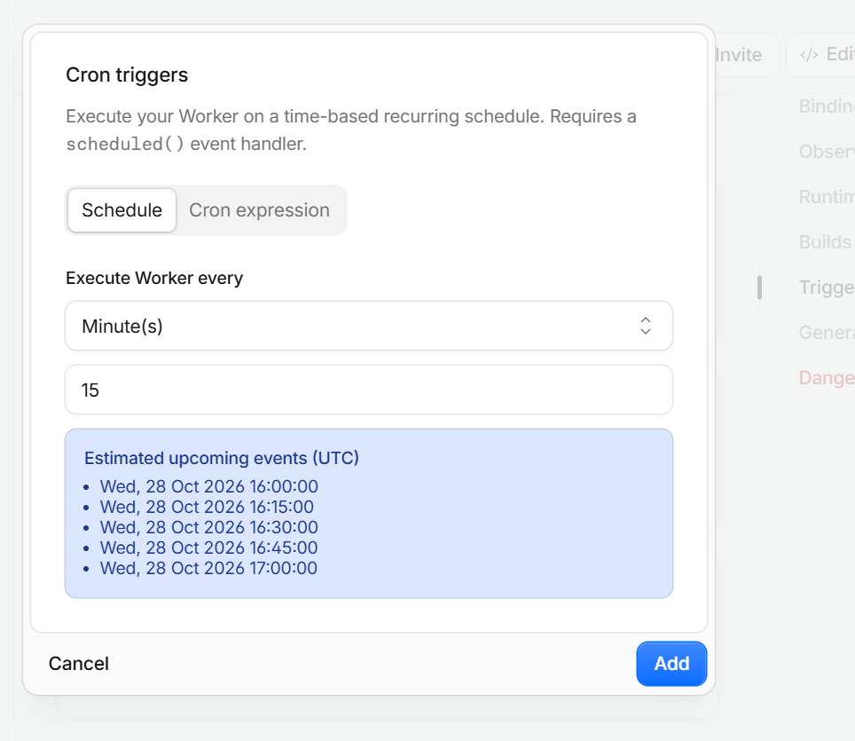
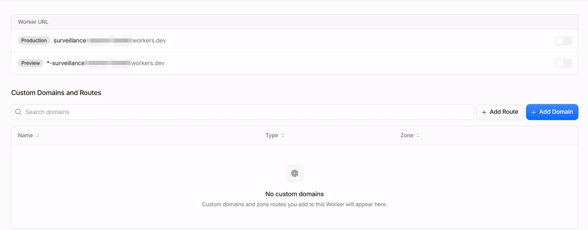
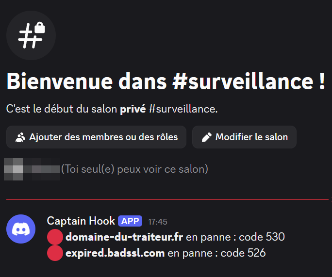
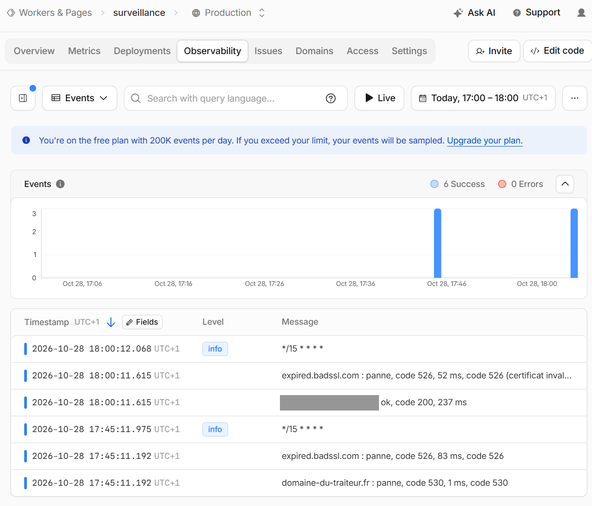
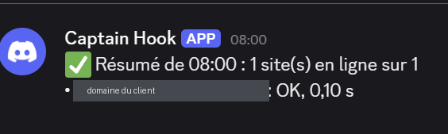

01Objectif
Savoir dans le quart d'heure si le site d'un de mes clients tombe en panne ou si son HTTPS ne marche plus, avant que le client ou ses visiteurs ne me le disent :
- une vérification toutes les 15 minutes, jour et nuit ;
- une alerte sur mon téléphone (Discord) quand un site tombe, puis quand il revient ;
- aucun bruit : pas d'alerte tant que rien ne change ;
- une preuve, chaque matin, que la surveillance elle-même tourne toujours.
Contrainte du projet : ma tour n'est pas allumée en permanence (électricité). Tout ce qui doit fonctionner tout le temps est donc confié à Cloudflare ou à la Freebox, jamais à la tour. La surveillance tourne dans un Worker Cloudflare (offre gratuite), et pas sur le labo.
02Schéma et technologies
┌─────────────────────────── Cloudflare (offre gratuite) ────────────────────────────┐
│ │
│ Cron Trigger « */15 * * * * » │
│ │ │
│ ▼ │
│ Worker « surveillance » (aucune adresse publique : workers.dev coupé) │
│ ├─ variable DOMAINES ─────────► https://site-du-client/ (2 essais, 10 s max) │
│ ├─ KV « ETAT » : dernier état connu de chaque site (ok / panne, depuis quand) │
│ └─ secret DISCORD_WEBHOOK ──┐ │
└────────────────────────────────┼───────────────────────────────────────────────────┘
│ seulement si l'état change, + résumé à 8 h
▼
Discord, salon privé #surveillance ──► notification sur mon iPhone| Rôle | Technologie |
|---|---|
| Exécution à heure fixe | Cloudflare Workers + Cron Trigger (toutes les 15 min) |
| Mémoire entre deux passages | Workers KV (une clé par site : état et heure du changement) |
| Alerte | webhook Discord (salon privé, notifications activées sur le téléphone) |
| Secret | lien du webhook en secret chiffré du Worker, jamais dans Git |
| Tests | node:test (Node.js 24), faux sites, faux Discord et faux KV (sans internet) |
| Code | surveillance/worker.js, surveillance/test_worker.mjs (dépôt Git privé) |
03Comment le Worker décide
- Pour chaque domaine de la variable DOMAINES, il ouvre https://domaine/ en suivant les redirections.
- Un site est en ligne s'il répond par un code 2xx. Il est en panne sinon : code d'erreur, pas de réponse en 10 s, ou connexion sécurisée impossible. Cloudflare refuse lui-même un certificat invalide, avec le code 526.
- Un échec est revérifié 5 s plus tard : une seule erreur passagère ne déclenche pas d'alerte.
- Il compare avec l'état gardé dans KV :
en ligne → en panne : 🔴 « site en panne : code 526 (certificat invalide) » ;
en panne → en ligne : 🟢 « site de nouveau en ligne, après 45 min de panne » ;
pas de changement : rien. - Chaque matin entre 8 h et 8 h 15 (heure de Paris, changement d'heure compris), il envoie un résumé de tous les sites. Si ce message manque un matin, c'est la surveillance elle-même qui est en panne.
Les codes d'erreur propres à Cloudflare (521 à 530) sont expliqués en français dans l'alerte, pour être compris d'un coup d'œil sur le téléphone.
04Les choix et pourquoi
- Alerte au changement d'état seulement : avec une alerte à chaque passage, une panne d'une nuit enverrait 30 messages, et on finit par ne plus les lire. KV ne reçoit une écriture qu'au changement, ce qui reste très loin de la limite gratuite (1 000 écritures par jour).
- L'alerte avant l'écriture de l'état : si Discord ne répond pas, l'état n'est pas enregistré. L'alerte repart donc au passage suivant, au lieu d'être perdue.
- Discord plutôt que Telegram : un seul lien secret à régler, notifications sur l'iPhone sans autre installation.
- Toutes les 15 minutes : un bon compromis entre réactivité et sobriété. Une panne est vue en 15 minutes au plus.
- Pas d'adresse publique : le Worker n'a pas de page. workers.dev et les « Preview URLs » sont coupés, il ne tourne que par le Cron. Il y a ainsi moins de surface exposée.
- Pas de date d'expiration du certificat ici : un Worker ne peut pas lire les détails d'un certificat. Il voit seulement si le HTTPS marche. La date reste vérifiée chaque mois par l'audit de la tour (étape 5). Mes clients sont chez Cloudflare, qui renouvelle les certificats automatiquement.
- Domaines des clients hors de Git : ils sont dans une variable du Worker, réglée dans le tableau de bord Cloudflare.
05Données personnelles (RGPD)
Je ne suis pas juriste : ce sont des précautions de bon sens, pas un avis juridique.
- Seuls les domaines de mes clients sont surveillés, jamais ceux des prospects.
- Le Worker ne lit que la page d'accueil publique, comme un visiteur. Il ne garde que l'état « en ligne / en panne » et l'heure du changement.
- Les noms de domaine transitent par Discord (service américain) dans un salon privé où je suis seul. Un domaine comme prenom-nom.fr peut être une donnée personnelle : c'est le minimum nécessaire au service rendu au client, et rien d'autre n'y est envoyé.
06La mise en ligne
Faite par moi dans le tableau de bord Cloudflare :
- Discord : serveur perso, salon privé #surveillance, webhook (lien copié, jamais collé ailleurs).
- Cloudflare : espace KV surveillance-etat.
- Worker surveillance (« Hello World »), code remplacé par surveillance/worker.js.
- Liaison KV ETAT, variable DOMAINES (texte), secret DISCORD_WEBHOOK.
- Cron Trigger : toutes les 15 minutes.
- Domains & Routes : workers.dev et Preview URLs désactivés.
Tests automatiques sur le portable :
node --test surveillance/test_worker.mjs07Tests réussis
| Test | Résultat attendu | Résultat obtenu | Preuve |
|---|---|---|---|
| 14 tests automatiques : passage panne / retour avec durée, pas de 2e alerte, 2e essai, Discord en panne, résumé à 8 h (été et hiver), aucune mention @everyone, message ≤ 2 000 caractères | pass 14, fail 0 | Conforme | Sortie de commande |
| Cron toutes les 15 min | Prochains passages à :00, :15, :30, :45 | Conforme | Fig. 1 |
| Worker sans adresse publique | workers.dev et Preview coupés, aucune route | Conforme | Fig. 2 |
| Certificat invalide : expired.badssl.com (site public prévu pour ce test) ajouté exprès | Alerte 🔴 sur le téléphone, code 526 | Conforme | Fig. 3 |
| Le vrai site de mon client vérifié depuis Cloudflare | ok, code 200, et aucun message (rien n'a changé) | Conforme (237 ms) | Fig. 4 |
| Résumé du matin (1er le 29/10) | « ✅ Résumé de 08:00 : 1 site(s) en ligne sur 1 », à 8 h pile, heure de Paris | Conforme (site du client OK, 0,10 s) | Fig. 5 |










08Problèmes rencontrés et solutions
| Problème | Cause | Solution |
|---|---|---|
| Aucune alerte ni aucun log à 17 h 00 et à 17 h 15 | Le Cron Trigger n'avait pas été enregistré : le Worker ne s'est jamais déclenché | Onglet Observability vide → Cron vérifié dans Settings, puis ajouté pour de bon. 1er passage à 17 h 45 |
| Impossible de savoir ce que le Worker avait vu quand il n'envoyait rien | Aucun journal quand tout va bien | Une ligne de journal par site (domaine : ok, code 200, 237 ms), visible dans Observability |
| Une alerte « code 530 » sur un domaine inconnu | J'avais recopié tel quel le domaine d'exemple (domaine-du-traiteur.fr) dans DOMAINES | Vrai domaine du client saisi. Le Worker a au moins prouvé qu'il repère un domaine qui n'existe pas |
| « code 526 » incompréhensible sur le téléphone | Code propre à Cloudflare | Explication en clair ajoutée pour les codes 521 à 530 (« certificat invalide ») |
09Limites connues
- Cloudflare surveille Cloudflare : mes sites et le Worker tournent chez le même hébergeur. Si Cloudflare tombe entièrement, le site et l'alerte tombent ensemble. Une 2e surveillance chez un autre service gratuit, ou Uptime Kuma sur le labo (étape 10), compléterait ce point.
- Un seul point de vue : le Worker vérifie depuis le réseau de Cloudflare, pas depuis la box d'un visiteur.
- La page d'accueil seulement : un formulaire de contact cassé ne serait pas vu.
- Offre gratuite : un nombre limité de requêtes par passage. Largement suffisant pour quelques clients, à revoir au-delà d'une vingtaine.
10Ce que j'en retiens
- Une surveillance qui ne dit rien doit prouver qu'elle tourne : sans le résumé du matin, un silence pourrait vouloir dire « tout va bien » comme « la surveillance est cassée ».
- Tester l'alerte avec une vraie panne, et pas seulement avec des tests : le site public expired.badssl.com a permis de déclencher une vraie alerte sans toucher au site d'un client.
- Ne pas noyer les alertes : alerter au changement d'état, et revérifier avant d'alerter.
- Placer chaque service là où il a du sens : la tour fait les audits complets quand elle est allumée, Cloudflare fait la surveillance qui doit tourner en permanence.